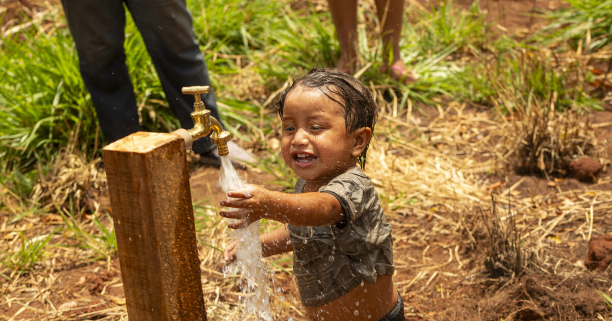

Making the world a better place
By effecting substantial and impactful change within the community
To empower vulnerable communities through education, healthcare, and sustainable development, fostering equality and opportunities for all. Together, we aim to create a world where everyone has equal opportunities to thrive . A world where every individual thrives with dignity, access to basic needs, and the chance to create a better future for themselves and their communities.
Story 1: Skill-based training can empower women by providing them with the skills and knowledge to be more employable, confident, and financially independent .This can lead to greater participation in the workforce, which can boost the economy.
Story 2: Providing clean water to rural areas. Some prominent examples include WaterAid, Charity: Water, Planet Water Foundation, and Water.org; these organizations work to install wells, water treatment systems, and educate communities on proper hygiene practices to ensure access to safe drinking water in rural regions.
About US
The Ashray Foundation, inspired by Dr. Johari’s vision of accessible healthcare and holistic community welfare, has grown into a transformative force since its inception. In 2024, Ashray achieved remarkable milestones, positively impacting over 2.47 million lives across India’s remotest regions. From Lahaul and Spiti to Narmada, the foundation has consistently turned challenges into opportunities, delivering sustainable solutions and fostering thriving communities. This unwavering commitment to change propels Ashray forward, embracing 2025 with the promise of continued progress and impactful milestones
EMPOWERMENT AND ENTREPRENEURSHIP
Artisans have long played a crucial role in shaping culture and beauty, with every handcrafted piece telling a story of tradition, skill, and heritage. In India, artisans have preserved cultural heritage through wood carving, fabric weaving, and clay molding. However, with the rise of automation and a fast-paced world, these traditional skills face the risk of fading. Fortunately, initiatives like Karuka by Ashray Foundation are helping artisans adapt by combining ancient craftsmanship with modern business practices, opening new opportunities for them in the global market. Despite this progress, artisans still face significant challenges in scaling their businesses, which are exacerbated as the industry evolves.